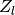
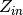
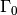
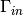
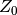
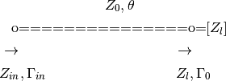
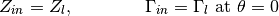

tlineFunctions (skrf.tlineFunctions)¶
This module provides functions related to transmission line theory.
Impedance and Reflection Coefficient¶
These functions relate basic tranmission line quantities such as characteristic impedance, input impedance, reflection coefficient, etc. Each function has two names. One is a long-winded but readable name and the other is a short-hand variable-like names. Below is a table relating these two names with each other as well as common mathematical symbols.
| Symbol | Variable Name | Long Name |
|---|---|---|
|  | z_l | load_impedance |
|  | z_in | input_impedance |
|  | Gamma_0 | reflection_coefficient |
|  | Gamma_in | reflection_coefficient_at_theta |
 |
theta | electrical_length |
There may be a bit of confusion about the difference between the load impedance the input impedance. This is because the load impedance is the input impedance at the load. An illustration may provide some useful reference.
Below is a (bad) illustration of a section of uniform transmission line
of characteristic impedance , and electrical length
. The line is terminated on the right with some
load impedance, . The input impedance and
input reflection coefficient are
looking in towards the load from the distance from the
load.

So, to clarify the confusion,

Short names¶
| theta(gamma, f, d[, deg]) | Calculates the electrical length of a section of transmission line. |
| zl_2_Gamma0(z0, zl) | Returns the reflection coefficient for a given load impedance, and characteristic impedance. |
| Gamma0_2_zl(z0, Gamma) | calculates the input impedance given a reflection coefficient and |
| zl_2_zin(z0, zl, theta) | input impedance of load impedance zl at a given electrical length, |
| zl_2_Gamma_in(z0, zl, theta) | |
| Gamma0_2_Gamma_in(Gamma0, theta) | reflection coefficient at a given electrical length. |
| Gamma0_2_zin(z0, Gamma0, theta) | calculates the input impedance at electrical length theta, given a |
Long-names¶
| distance_2_electrical_length(gamma, f, d[, deg]) | Calculates the electrical length of a section of transmission line. |
| electrical_length_2_distance(theta, gamma, f0) | Convert electrical length to a physical distance. |
| reflection_coefficient_at_theta(Gamma0, theta) | reflection coefficient at a given electrical length. |
| reflection_coefficient_2_input_impedance(z0, ...) | calculates the input impedance given a reflection coefficient and |
| reflection_coefficient_2_input_impedance_at_theta(z0, ...) | calculates the input impedance at electrical length theta, given a |
| input_impedance_at_theta(z0, zl, theta) | input impedance of load impedance zl at a given electrical length, |
| load_impedance_2_reflection_coefficient(z0, zl) | Returns the reflection coefficient for a given load impedance, and characteristic impedance. |
| load_impedance_2_reflection_coefficient_at_theta(z0, ...) |
Distributed Circuit and Wave Quantities¶
| distributed_circuit_2_propagation_impedance(...) | Converts distrubuted circuit values to wave quantities. |
| propagation_impedance_2_distributed_circuit(...) | Converts wave quantities to distrubuted circuit values. |
Transmission Line Physics¶
| skin_depth(f, rho, mu_r) | the skin depth for a material. |
| surface_resistivity(f, rho, mu_r) | surface resistivity. |